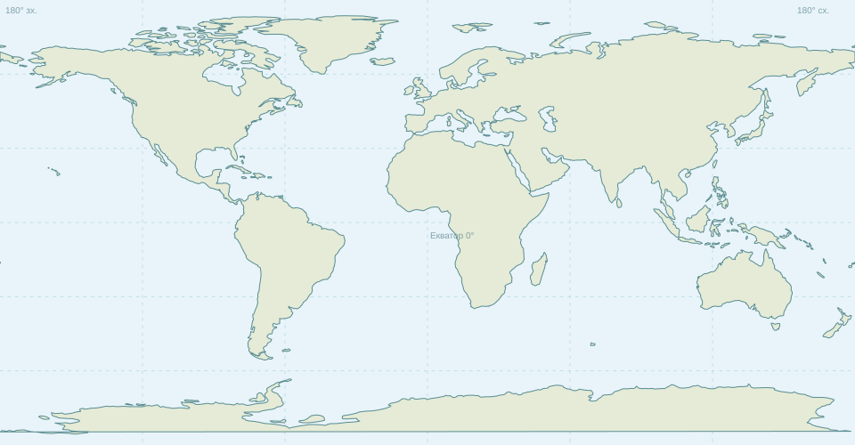

🌋
🌋01 / Проблемна ситуація
0–4 хвГеологічна загадка: чому землетруси утворюють пояси?
Земна поверхня — не нерухома шкаралупа. Літосфера поділена на великі й менші тверді плити, які рухаються дуже повільно. На їхніх межах часто накопичуються напруження, виникають землетруси, вулкани й гори.
Місія: знайти сім основних плит, нанести на контурну карту два приклади меж, показати стрілками рух і зробити пояснювальні висновки.
Перш ніж роздивлятися карти, оберіть свою гіпотезу:
🔎 Три докази, які ми перевіримо
Карта. Землетруси та вулкани нерівномірно розташовані.
Форми рельєфу. Гірські хребти й жолоби часто пов'язані з межами плит.
Вимірювання. Сучасні геодезичні прилади фіксують рух поверхні в сантиметрах на рік.
Важливо: землетруси й вулкани трапляються і в межах плит, тому не кожна подія однозначно визначає їхню межу.
02 / Атлас дослідника
4–10 хвСправжні тектонічні карти, не намальовані наосліп
Порівняйте три незалежні картографічні подання. Вони складніші за схеми в підручнику, тому користуйтеся підказками українською. Карти походять з USGS, NPS і дослідницьких публікацій.
Якщо зображення не завантажилось, скористайтеся кнопкою «Відкрити джерело». Усі вправи та контурна карта залишаються доступними.
🟥 Розходження
Плити віддаляються. Приклад: Серединно-Атлантичний хребет. Може утворюватися нова океанічна кора.
🟦 Зближення
Плити наближаються: можливі гори, жолоби й субдукція. Приклад: Анди.
🟪 Ковзання
Плити рухаються в різних напрямках уздовж спільної межі. Приклад: Сан-Андреас.
Колір умовного знака може відрізнятися на різних картах. Завжди читайте легенду конкретної карти, а не запам’ятовуйте один колір назавжди.
03 / Центральне завдання уроку
10–21 хвПрактична робота №5: «Позначення на контурній карті меж літосферних плит»
Звіряйтеся з науковими картами вище. Тепер Ви можете малювати безпосередньо на карті в браузері: провести межі, додати стрілки й підписи та завантажити готову роботу. Паперова контурна карта — додатковий варіант.
Мета практичної: знайти основні плити на реальній карті; перенести їх на контурну; позначити дві межі різних типів; показати напрямок відносного руху та пояснити наслідки.
✏️ Частина А. Сім плит
- Тихоокеанська
- Північноамериканська
- Південноамериканська
- Євразійська
- Африканська
- Індо-Австралійська
- Антарктична
У сучасних детальніших моделях Індійську й Австралійську плити можуть виділяти окремо; для цього шкільного завдання використовуйте назву з атласу.
🖊️ Частина Б. Дві межі
1. Серединно-Атлантичний хребет. Проведіть лінію посеред Атлантичного океану. На двох ділянках намалюйте стрілки в протилежні боки від хребта.
2. Західна окраїна Південної Америки. Проведіть лінію вздовж тихоокеанського узбережжя Анд. Показуйте зближення плити Наска з Південноамериканською.
Плита Наска — менша плита; для пояснення субдукції знайдіть її на детальній карті.
🌟 Головний інструмент практичної №5
Працює на телефоні й комп’ютері
Малюйте просто на карті! ✏️🗺️
Усе можна виконати прямо тут: підписати 7 плит, провести межі, намалювати стрілки й зберегти готову роботу у PNG для Google Classroom. Паперова контурна карта — запасний варіант, а не обов’язкова умова.
Як працювати: 1. Виберіть інструмент 2. Оберіть колір 3. Малюйте або ставте підпис 4. Збережіть PNG
Колір:
Червоний: розходження
Синій: зближення
Фіолетовий: ковзання
Темний: назви плит

На телефоні за потреби пересуньте карту горизонтально інструментом «✋ Пересунути». «Олівець» малює вільну лінію; «Стрілка» — від початку до кінця руху; «Підпис» ставить вибрану назву одним натисканням; «Гумка» прибирає окрему лінію або підпис.
💡 Почніть із «🔤 Підпис»: виберіть першу плиту, натисніть потрібне місце на карті. Потім проведіть дві межі «Олівцем» і напрямки руху «Стрілкою».
Не забудьте: натиснути «Зберегти готову карту (PNG)» і прикріпити зображення до завдання в Classroom. Сторінка також зберігає чернетку в браузері цього пристрою, але на іншому телефоні вона не з’явиться. Автоматично в Classroom нічого не надсилається.
Основа карти: Natural Earth, набір world-110m від Vega Datasets, у локальному SVG для уроку. Межі плит учні наносять самостійно за науковими картами вище.
Додатковий онлайн-тренажер: перевірте розміщення плит

Поставте назви на правильні місця
Спочатку виберіть назву плити у списку. Потім натисніть її центр на справжній контурній карті світу (число 1–7). Якщо місце правильне — підпис відкриється. Складніший варіант: спершу вгадайте без атласу, потім перевірте.
Підписано 0 із 7
Якщо карта не відкрилася, використайте контурну карту в атласі й завдання нижче.
Контурна карта: WorldMap-Blank-Noborders, Wikimedia Commons. Точки — орієнтовні центри для навчання, а не фактичні межі плит.
🧩 Частина В. Визначте тип межі за місцем на карті
Орієнтуйтеся на наукову карту в атласі й оберіть правильну відповідь.
| Місце | Тип межі | Перевірка |
|---|---|---|
| Серединно-Атлантичний хребет | — | |
| Західне узбережжя Південної Америки (Анди) | — | |
| Розлом Сан-Андреас (Каліфорнія) | — |
📐 Частина Г. Умовні знаки й висновки
На власній карті зробіть легенду: суцільна лінія — межа плит, стрілки — напрямки відносного руху. Для двох обраних ділянок додайте короткий підпис «рух → наслідок».
Географія · 6 клас · Практична робота №5
Позначення меж літосферних плит
Прізвище та ім'я: _______________________________________ Клас: ________ Дата: ________
Основа карти: Natural Earth (Vega Datasets world-110m), локальний файл world-coastline-naturalearth.svg. Підпишіть 7 плит, 2 межі різних типів, стрілки та легенду. Звіряйте з атласом.
Межа 1: Атлантика
Межа 2: Анди
Що здати: PNG із намальованою онлайн картою або фото паперової контурної карти з легендою, сімома підписами, двома позначеними межами, стрілками й висновками. Якщо роботу вже перевірили очно, повторно прикріплювати її не потрібно.
04 / Модель геологічного руху
21–27 хвЩо відбувається під ногами, коли плити рухаються?
Оберіть тип межі й рухайте повзунок. Це спрощена схема, яка показує напрямки руху, а не реальний швидкий рух земної кори.
📏 Скільки кілометрів за мільйон років?
У реальності плити можуть рухатися на сантиметри за рік. Обчисліть накопичене переміщення для сталої середньої швидкості (у природі вона може змінюватися).
4 см/рік протягом 1 млн років → 40 км.
🧠 Не потрапте в пастку
Модель ≠ пророцтво. Наш повзунок не розраховує справжні землетруси. Він показує геометрію трьох типів руху.
Континент ≠ плита. Плити містять як суходіл, так і океанічне дно; їхні межі не обов'язково збігаються з береговими лініями.
05 / Польовий фотоатлас
27–32 хв + за бажанням вдома8 справжніх геологічних знімків — упізнайте процес
Фото взяті з Wikimedia Commons, NASA й USGS. Це реальні ландшафти та знімки вивержень, не нейромережеві ілюстрації. Виберіть тип межі та перевірте пояснення. Для Ісландії пам'ятайте і про вулканічну гарячу точку.
🌋 🏔️
🏔️Індія / Гімалаї
Гімалаї з повітря
Який рух плит пояснює цей об'єкт?
Фото: Benison P Baby · CC BY-SA 4.0 ↗ 〰️
〰️Каліфорнія, США
Розлом Сан-Андреас
Який рух плит пояснює цей об'єкт?
Фото: John Wiley / Jw4nvc · Wikimedia Commons ↗ ⛰️
⛰️ 🪨
🪨Північна Ісландія
Тріщина у вулканічних породах
Який рух плит пояснює цей об'єкт?
Фото: Wikimedia Commons • див. сторінку ліцензії ↗ 🌫️
🌫️Ісландія, 2010
Виверження Ейяф'ятлайокутля
Який рух плит пояснює цей об'єкт?
Фото: Árni Friðriksson · CC BY-SA ↗ 🛰️
🛰️Ісландія, NASA
Супутниковий знімок попелу
Який рух плит пояснює цей об'єкт?
Фото: NASA • public domain ↗ 🌋
🌋США, 1980
Виверження Сент-Геленс
Який рух плит пояснює цей об'єкт?
Фото: USGS / Austin Post • public domain ↗Почніть з Ісландії, Гімалаїв, Анд та Сан-Андреас. Решту карток можна пройти вдома.
06 / Відеолабораторія
Фрагмент 2 хв або вдомаУкраїнською: два реальні відеоуроки з потрібними епізодами
На основному уроці достатньо переглянути епізод про три види меж з першого відео. Повні відео — за бажанням. Якщо YouTube заблокований, використовуйте прямі посилання під програвачами.
🎬 Географія ПРОСТО — «Літосферні плити»
Дивіться орієнтовно 02:14–04:05: зближення, субдукція, розходження, рифти та швидкості. Відео 2023 року, українською.
🎬 Рішельєвський дистанційний — «Літосферні плити»
Відеоурок 2024 року: дрейф материків, Пангей, рух і різні типи меж. Українською.
07 / Завершення експедиції
32–35 хвМій географічний висновок: твердження → доказ → пояснення
📍 Підсумкова мінісправа
Твердження: розміщення землетрусів і гірських поясів пов'язане з рухом літосферних плит.
Доказ: на карті меж плит і в фотографіях знайдіть приклад — Атлантика, Анди чи Сан-Андреас.
Пояснення: назвіть тип руху й геологічний наслідок. Не робіть висновків тільки з одного фото без карти.
Перевірте практичну перед здачею
Домашнє завдання: §15. Завершіть контурну карту з практичної №5 та підпишіть дві межі й висновки. Після цього пройдіть тест унизу сторінки. Здати: PNG карти, створеної в браузері, або фото паперової карти (якщо роботу не перевірили очно) і скриншот тесту.
Після заняття / Перевірка знань
10 балівФінальний тест: 10 геологічних задач
Питання про справжні приклади, карти та причинно-наслідкові зв'язки. Після завершення отримаєте картку для скриншота. Відповіді обробляються тільки у браузері.
🏅 Картка юного геолога
Зробіть скриншот картки та надішліть учителю.Звідки взяті карти, знімки та відео
Карти й фото використані як наукові та навчальні джерела. Інтерактивні схеми руху плит і кнопки тренажера — створені для цього уроку. Картинки підвантажуються з відкритих джерел і можуть вимагати інтернету.
NPS — Plate Tectonics: межі плит і принципи їхнього руху ↗ USGS — геологічні освітні ресурси й тектонічні карти ↗ Wikimedia Commons — карта плит за моделлю 2022 року ↗ Wikimedia Commons — географічна основа контурної карти ↗ USGS — карта зареєстрованих землетрусів (оновлюється) ↗